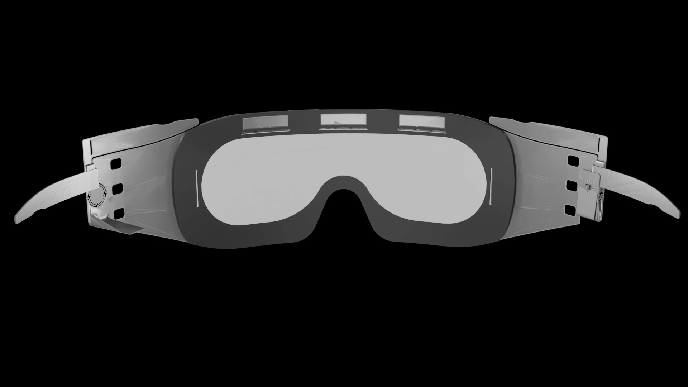
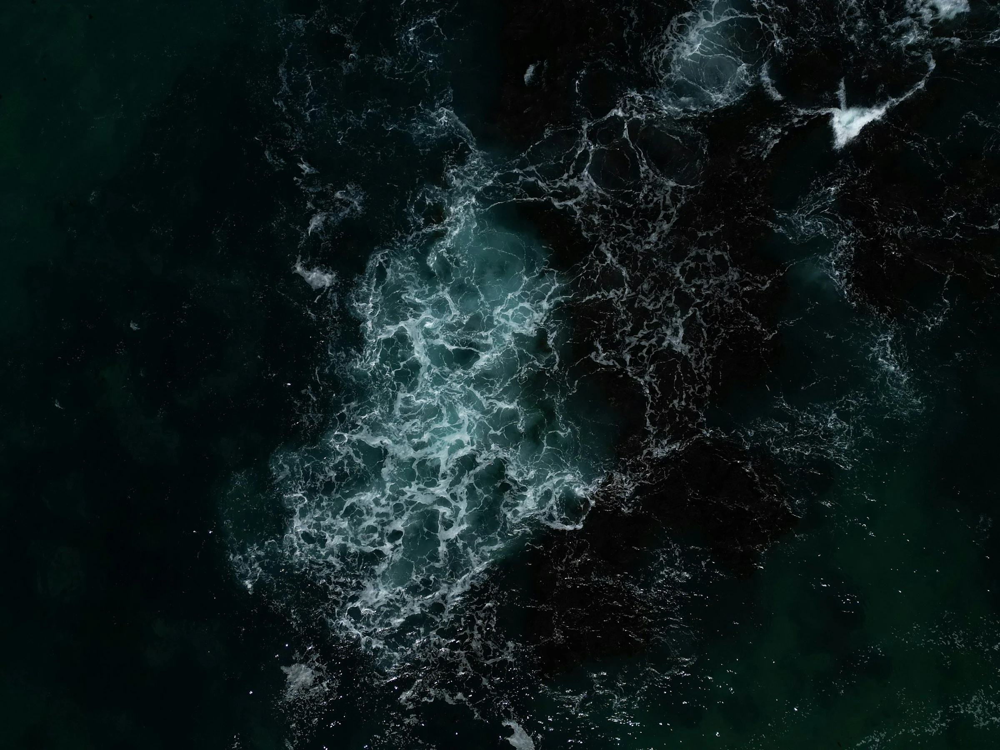
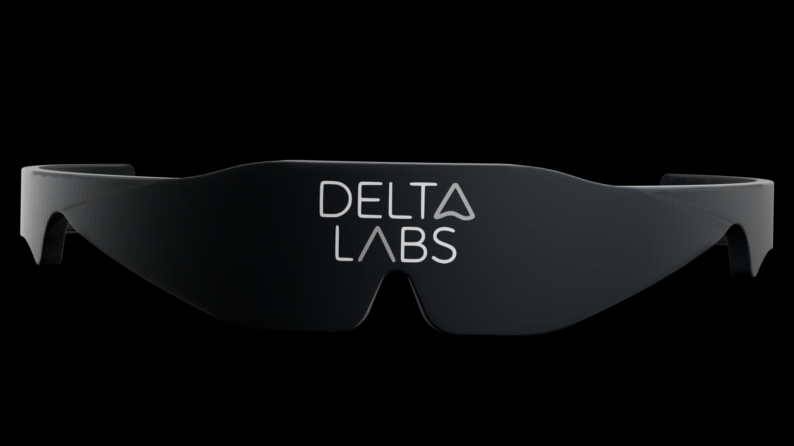

The DeltaLabs smart sleep mask
THE DELTALABS MASK
Understand your nights.
Make more of your days.
Sleep insights, timed sound, and sunrise light.
Designed together. Within reach.
YOUR NIGHT, IN ONE PLACE
A clearer picture
of your sleep.
Go beyond a sleep score.
Sleep-stage estimates from brain and eye signals, with a planned app that helps you understand your patterns.
COMFORT COMES FIRST
Made for the
hours you let go.
A removable, washable cushion.
A flexible fit, designed for nightly wear.

A DIFFERENT KIND OF MORNING
Wake to light.
A gradual sunrise, inside the mask. Integrated audio and wake timing are being developed to make your morning routine more intentional.

THE SCIENCE THAT STARTED IT
Nature never
let go of sleep.
Not over open oceans.
Not with predators nearby.

SLEEP TECHNOLOGY, WITHIN REACH
One mask.
No subscription.
A $99 target price, including the planned app and access to your sleep data.
FOLLOW THE LAUNCH ↗Prototype stage. Launch date to be announced.
BUILT BY GRANT & MO.
MEET THE TEAM ↗Design and material visualizations. Target features and pricing may change. Consumer wellness product in development; integrated accuracy, comfort, and sleep benefits require validation.